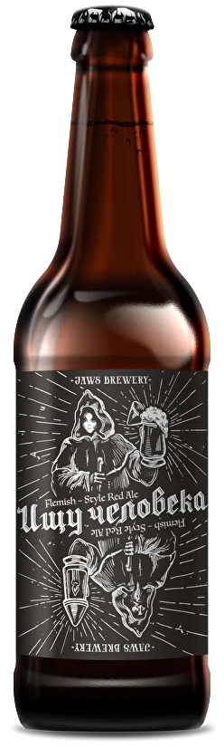
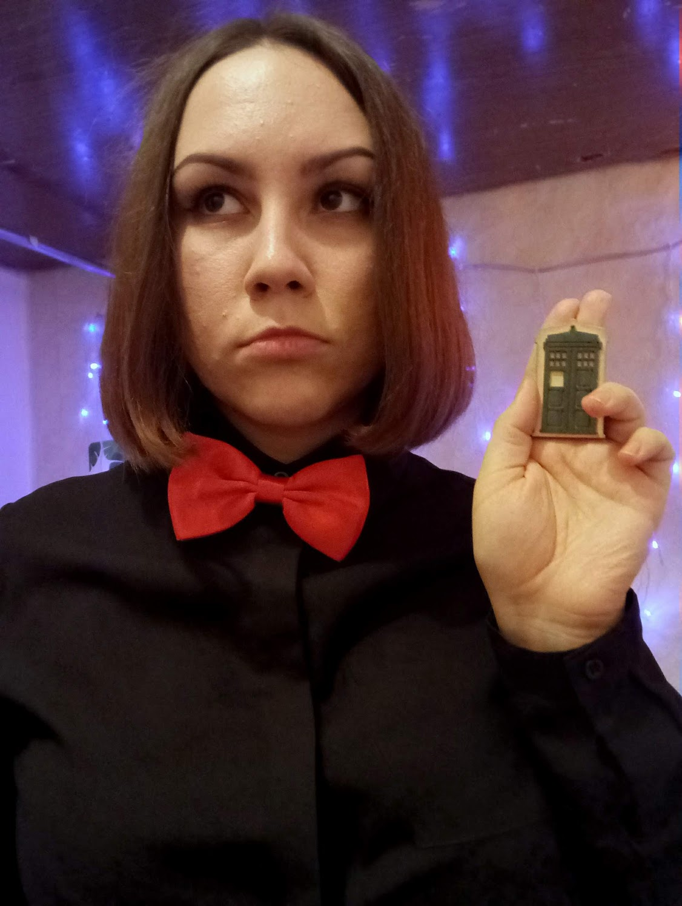
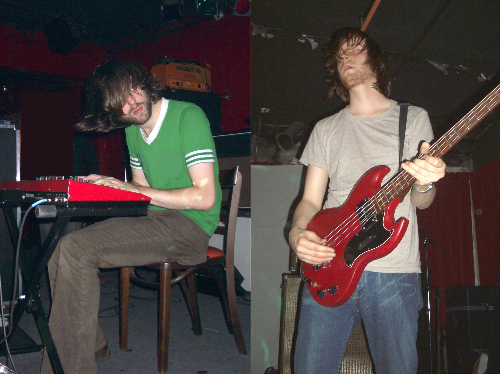

Люблю быть
дизайнером,
нести ответственность
слушать
помогать
исследовать
создавать
изобретать
рассказывать
проектировать
учиться
люблю
Саратов,
людей
улицы
природу
архитектуру
локальные бренды
кафе
рестораны
историю
транспорт
неидеальность
маленькость
люблю
людей.
открытых
честных
эмпатичных
увлечённых
думающих
ищущих
исследующих
творческих
бесстрашных
Выражаю свою любовь в текстах, в 2D и 3D иллюстрациях, принтах, макетах для печати и для веба, и в интерфейсах. А ещё в коммуникации, в выстраивании процессов и в организации среды.
Работала редактором и верстальщиком. Преподавала
издательское дело.
печатные технологии
иллюстратор
индизайн
фотошоп
основы графического дизайна
книжный дизайн
журнальный дизайн
курсовые
дипломные
Училась на педагога-психолога. Теперь хочу работать дизайнером.
Веду телеграм-канал «Каково быть дизайнером», в котором рассказываю о своём пути в дизайн, внутреннем хейтере, самооценке, личных и профессиональных ценностях.
Вела подкаст «Кристина записывает аудио», в котором рассказывала про моё отношение к работе, твиттеру, сериалам, тревожности и успеху. Подкаст я выпустила 6 лет назад и просуществовал он всего 6 выпусков, но я до сих пор его очень люблю.
Любимое пиво — «Ищу человека». 
Любимый сериал — «Доктор кто». 
Любимая музыкальная группа — «Ratatat». 
Дизайн-концепции я создаю на основе послойной работы с референсами (отдельно сочетаю рефы на лейаут, цвет, типографику и элементы, объединяя их общей визуальной метафорой). Этому я научилась в Wannabe.
Учусь понимать потребности пользователей, мыслить сценариями и доносить ценность продукта путём проектирования ясных акцентов и сценариев. Этому я учусь в Wannabe.
Концепт моего зина про Саратов. Который однажды, возможно, воплотится в жизнь.
Эти коллажи мне удалось создать благодаря людям из саратовской дизайн-студии Слой, который организовали кружок коллажа «Макулатура». Они даже выпустили про это отдельный кейс. А ещё я написала пост в своём телеграм-канале про то, чему меня научило создание коллажей.
Эти принты я создаю из подручных материалов: ластиков, штемпельных подушек, губок и трафаретов из картона. Такой технике меня научили художницы Марина Багаева и Маша Титова.
Эти иллюстрации я создала в рамках конкурса визуальных отрыток от туристического проекта «Место приземления — Саратов».
Эти сцены я замоделила, зарендерила и анимировала в Cinema 4D (node-based Redshft render). Этому я научилась в Wannabe.
Как располагать объекты на макете в различных программах я либо умею, либо могу научиться. Самое главное для меня — это то, зачем я это делаю и с кем.
Мне интересно исследовать: искать ответы в реальности, выдвигая гипотезы и проверяя их, задавая вопросы, слушая, интересуясь, фиксируя, систематизируя, донося, взаимодействуя.
Мне интересен продуктовый подход, гештальт-психология, возрастная психология, средовая педагогика и дизайн (и то, как всё это вместе может сочетаться).
Сейчас мне интересно вот что:
Пообщаться с вами в Зуме, если сфера наших интересов совпадает
Выступить с лекцией и поделиться своим опытом (про мой путь в дизайн, про самооценку, про выгорание, про обесценивание)
Стать гостем вашего подкаста (в групповом обсуждении я могу поразмышлять на более широкий спектр тем, I'm a woman of culture)
Помочь
написать
нарисовать
замоделить
сверстать
побрейнстормить
выслушать
поисследовать
вам с чем-нибудь в вашем проекте, если он мне интересен (бесплатно или за донат)
Влиться в вашу команду на фултайм или парт-тайм, если наши ценности совпадают (но сначала хочу с вами пообщаться или даже поработать сначала над небольшим проектом)
Мне можно написать в Телеграме
Написать